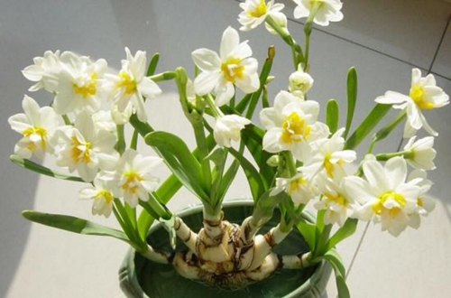
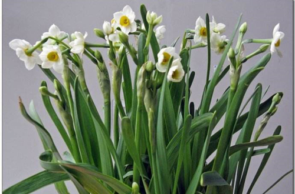

很多人都说水培植物养殖是最简单的，可也不全是，如水多了，水质不好，没营养等这些情况都会影响水培植物的生长，期中处理水培植物烂根是最麻烦的，
发现水仙花烂根后要及时去除烂根部分，用小刀轻轻刮去腐烂的部分，再用多菌灵浸泡一会进行消毒，晾干，在其愈合前不要接触到水。烂根要以预防为主，选择无杂质的清水，要经常换水，换水时候动作要轻点不要伤到根部。
水培水仙花如果用的水不干净或是长期没有换水，水仙花的根部会被污染，就会导致烂根。如果是使用自来水，水最好是沉淀一两天再用。也有花友觉得用自来水很麻烦就用矿泉水之类的来养，花匠大叔觉得没这个必要，水仙花没那么娇贵的。
水养水仙花的时候，要勤换水，不然容易繁殖细菌，营养也会越来越少，对根部的生长是十分不利的，最好是每天换水。换水时不要让水位超过了腐烂的部位，等腐烂的部位自愈后，再把水位提高。如果情况不严重的话，一般把腐烂的花根清除后不见水，两周左右就可以自愈。
水养水仙花不能用铁器，最好是选择瓷、陶、玻璃、塑料等器皿来用，如果用铁器的容易生锈，锈水就会使花芽、须根的部位霉烂。
水仙花是喜光的短日照植物，白天需要全光养护，最好是能整天阳光晒透，要摆放在通风向阳处养护，让它每天至少接受3小时的光照，这样才能有利于植株的生长。